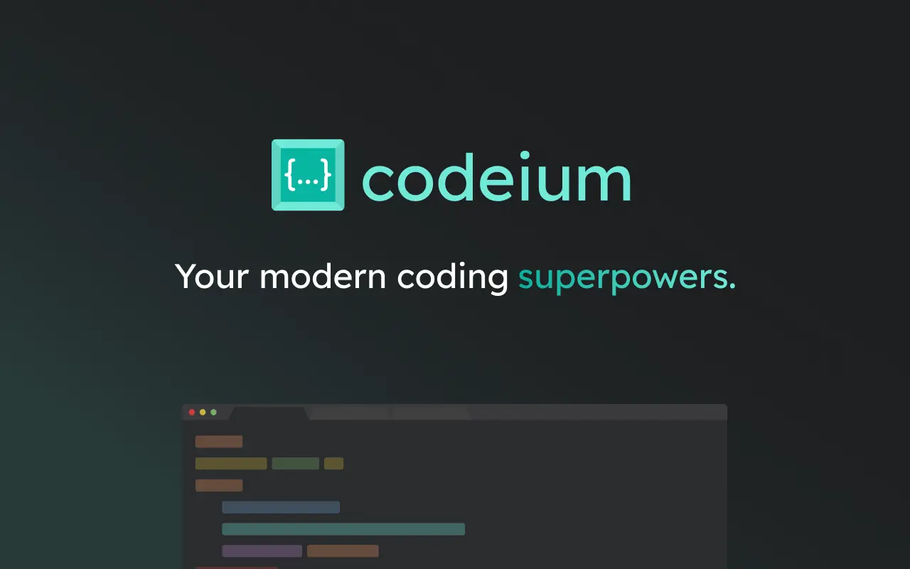
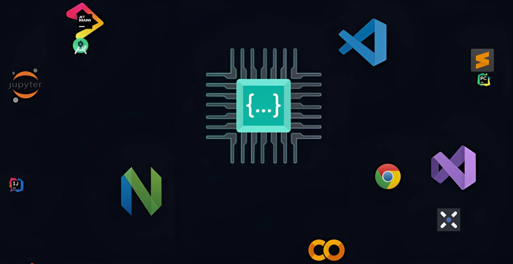

</>
{ }
AI

Codeium
Codeium es un asistente de programación con inteligencia artificial. Ayuda a completar código, corregir errores, generar funciones y mejorar el trabajo de desarrollo.
Ir a Codeium Oficial
Codeium es un asistente de programación con inteligencia artificial. Ayuda a completar código, corregir errores, generar funciones y mejorar el trabajo de desarrollo.
Ir a Codeium OficialAutocompletado
Asistente de desarrollo
Productividad


Sugiere líneas de código mientras programas.
Ayuda a detectar y solucionar errores en el código.
Puede crear funciones, estructuras y ejemplos de programación.
Apoya el trabajo de programadores y estudiantes.